Convenções: código indica comandos, rotas e nomes de arquivo; Tecla indica atalhos de teclado; nomes em negrito são botões e rótulos da interface; 2.1.0 marca o que é novo nesta versão.
O Lume para Windows em uma página: o que é, para quem foi feito e como as peças se encaixam.
Uma biblioteca pessoal de PDF e DOCX que roda inteira no seu computador, num único Lume.exe, sem instalador, sem servidor na nuvem e sem conta. Cada arquivo importado ganha capa, texto indexado, sumário, descrição e etiquetas escritas por IA, e abre num leitor próprio que guarda a página, os destaques e as notas.
Baixe o Lume.exe (cerca de 46 MB, com o Java embutido) e dê dois cliques. Na primeira vez o Windows pode pedir Mais informações → Executar assim mesmo. Arraste a pasta exemplos/ do repositório para ver a biblioteca cheia.
Detalhes no capítulo 03.
| Lume.exe | Lançador portátil (NSIS) com Java 21 reduzido |
| Núcleo | Spring Boot 4 em 127.0.0.1: API, pipeline, integrações |
| Janela | Microsoft Edge em modo aplicativo |
| lume.db | SQLite com busca FTS5 |
| documentos/ | Originais, capas e HTML de leitura |
O Lume para Windows é a versão desktop do Lume web: a mesma interface, a mesma lógica de biblioteca e o mesmo leitor, com o núcleo em Java 21 e Spring Boot e todos os dados numa pasta do seu usuário.
O Lume funciona como uma estante digital instalada no próprio computador. Você arrasta os arquivos (ou pastas inteiras) para a janela e cada documento ganha capa, descrição escrita por IA, sumário e um leitor que lembra onde você parou. Serve para organizar apostilas, livros técnicos, artigos, relatórios, contratos e atas com busca no texto completo, estantes de leitura, coleções e anotações, e para levar esse acervo a outros programas quando for preciso.
Não há servidor na internet, Docker nem conta: tudo fica num executável, o Lume.exe, e numa pasta de dados no seu usuário do Windows (ou num pendrive, no modo portátil).
| Recurso | Descrição |
|---|---|
| Importar arrastando | Arquivos soltos, vários de uma vez ou pastas inteiras (com subpastas), além do botão Adicionar documentos. Repetidos são reconhecidos pela impressão digital (SHA-256) e não ocupam espaço de novo. |
| Capas automáticas | A capa de um PDF é a primeira página que não esteja em branco, desenhada pelo Apache PDFBox. DOCX ganham uma capa tipográfica em Java2D nas cores da paleta. |
| Descrição por IA | Duas ou três frases e até quatro etiquetas por documento, vistas na prévia ao passar o mouse. Funciona sem internet (resumo local) ou com Claude, OpenAI, Gemini, Groq, OpenRouter, Mistral, DeepSeek, Ollama e LM Studio. |
| Pergunte ao documento 2.1.0 | Faça uma pergunta e receba os trechos mais relevantes, com a página; com um provedor de IA, a resposta vem escrita e citando os trechos. |
| Leitor próprio | PDF com pdf.js (zoom, miniaturas, sumário, busca, temas Papel, Sépia e Noite, modo foco) e DOCX convertido em texto de leitura. Destaques em quatro cores, notas e marcadores, exportáveis em Markdown. |
| Organização | Estantes Quero ler, Lendo e Lidos com arrastar e soltar; coleções com ordem própria; favoritos e etiquetas; seleção múltipla com ações em lote 2.1.0. |
| Busca de verdade | Título, autor, descrições, etiquetas e o texto inteiro, sem diferenciar acentos, com frase exata, exclusão (-palavra), filtro por etiqueta e o trecho encontrado em destaque. |
| Estatísticas 2.1.0 | Documentos e páginas, leituras concluídas por mês, assuntos mais frequentes, formatos, idiomas e maiores arquivos. |
| Ferramentas 2.1.0 | Backup completo em .zip, exportação do catálogo (CSV, JSON, BibTeX, Markdown), notas para Obsidian e Notion, verificação e manutenção do banco. |
| Integrações 2.1.0 | Pastas monitoradas com importação automática e webhooks para n8n, Make, Zapier, Slack, Discord, Teams ou o seu servidor. |
| Do jeito do Windows | Diálogos nativos, abrir no programa padrão, mostrar no Explorador, salvar uma cópia, “Abrir com” o Lume num PDF, tema que acompanha o sistema e modo portátil. |
| Camada | Tecnologia | Papel |
|---|---|---|
| Núcleo | Java 21 · Spring Boot 4 (Spring MVC, Tomcat 11 embutido) | API local, biblioteca, pipeline, integrações, eventos e ponte com o Windows |
| Janela | Microsoft Edge em modo aplicativo (--app, Chromium) | Mostra a interface sem barra de endereço, com perfil próprio |
| Interface | JavaScript (módulos ES, sem etapa de build) · HTML · CSS | Biblioteca, prévia, leitor, paleta, estatísticas e painéis |
| Leitura de PDF | Apache PDFBox 2 · pdf.js 5 no leitor | Texto, sumário, metadados e capa (PDFBox); páginas na tela (pdf.js) |
| Leitura de DOCX | Java próprio: java.util.zip + StAX seguro · jsoup | Texto, sumário, imagens e HTML de leitura higienizado |
| Banco de dados | SQLite 3.53 (sqlite-jdbc) · FTS5 · JdbcTemplate | Documentos, leituras, anotações, coleções, preferências e busca |
| IA | Resumo extrativo local · Claude · APIs compatíveis com OpenAI (java.net.http) | Descrição, etiquetas e respostas do “Pergunte ao documento” |
| Integrações | ScheduledExecutorService · java.net.http · HMAC-SHA256 | Pastas monitoradas e webhooks |
| Windows | JNA (DPAPI, registro, foco da janela) · AWT/Swing | Cofre das chaves, diálogos de arquivo, Explorador |
| Testes | JUnit 6 · Spring Boot Test · Playwright | Testes automatizados e teste de interface de ponta a ponta |
| Empacotamento | Maven · jlink · NSIS | Lume.exe portátil, sem instalador, com o Java embutido |
A versão 2.1.0 adota a identidade da versão web 1.1. A paleta de cinco tons claros continua a mesma, mas cada cor ganhou um papel fixo. A marca continua sendo a Faísca, uma página com uma estrela de quatro pontas vazada (o documento que ganha descrição escrita por IA), sempre monocromática: preta no tema claro e branca no escuro; no ícone do Lume.exe a estrela é preenchida de branco para aparecer em barras de tarefas claras e escuras.
Serifada para títulos de página, nomes de documentos, o texto do leitor de DOCX e as capas geradas.
Sem serifa para botões, menus, formulários e textos de apoio.
Monoespaçada para metadados, contadores, rótulos de seção e atalhos. Embutida no aplicativo (licença OFL).
prefers-reduced-motion e contraste AA entre texto e fundo (veja o capítulo 05).Não há instalador: o Lume é um único arquivo. Basta abrir o Lume.exe. Na primeira vez o Windows pode pedir uma confirmação, porque o arquivo não tem assinatura digital paga.
Lume.exe: não é preciso instalar nada.Lume.exe extrai o Java reduzido e o aplicativo para %LOCALAPPDATA%\Lume\app\<versão>; as aberturas seguintes reaproveitam essa pasta.Lume.exe para onde quiser (Área de Trabalho, Documentos, um pendrive).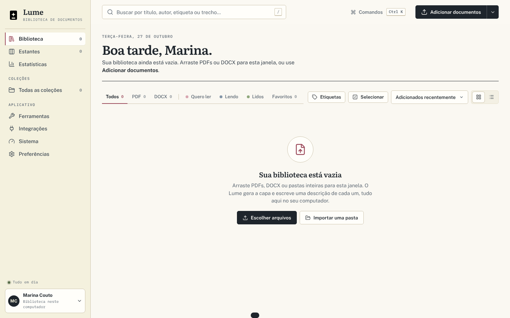
exemplos/ com 12 documentos fictícios (8 PDF e 4 DOCX). Arraste a pasta inteira para a janela para ver a biblioteca cheia, como nos prints deste manual.| Situação | Pasta |
|---|---|
| Padrão | %APPDATA%\Lume\Biblioteca (por exemplo C:\Users\voce\AppData\Roaming\Lume\Biblioteca), a mesma das versões anteriores, então a biblioteca continua lá |
| Modo portátil | Lume-dados\Biblioteca, ao lado do Lume.exe |
| Escolhida por variável | o caminho em LUME_DATA_DIR, se ela existir |
Dentro da pasta ficam o banco lume.db (e os arquivos auxiliares lume.db-wal e lume.db-shm), a pasta documentos\ com uma subpasta por documento (original, capa, HTML de leitura e imagens), a pasta tmp\, usada durante a importação e o backup, e o registro lume.log. As pastas monitoradas e os webhooks ficam guardados no próprio banco, na tabela de preferências. O perfil da janela (cache do Edge) fica em %LOCALAPPDATA%\Lume\navegador. O botão Abrir a pasta de dados, em Sistema, em Preferências e na paleta de comandos, abre o lugar certo no Explorador.
Para levar a biblioteca num pendrive, crie uma pasta chamada exatamente Lume-dados ao lado do Lume.exe antes de abrir. A partir daí, banco, documentos e o perfil da janela ficam dentro dela (Lume-dados\Biblioteca e Lume-dados\app). A tela Sistema mostra Portátil quando esse modo está ativo.
Lume.exe pelo novo. A pasta de dados continua a mesma; a 2.1.0 não muda o esquema do banco, então uma biblioteca da 2.0 abre direto. Quem vem da versão 1 (Electron) só precisa informar de novo a chave de API, se usava um provedor externo..zip com o banco e todos os arquivos (veja Backup completo). Com o Lume fechado, copiar a pasta de dados inteira também funciona.Lume.exe, a pasta %LOCALAPPDATA%\Lume e, se quiser apagar também a biblioteca, a pasta %APPDATA%\Lume. Os arquivos de onde você importou os documentos nunca são alterados.A janela tem o menu lateral à esquerda (biblioteca, estantes, estatísticas, coleções, ferramentas, integrações, sistema e preferências) e, no alto, a busca, o botão Comandos e o botão de adicionar. O leitor ocupa a janela inteira.
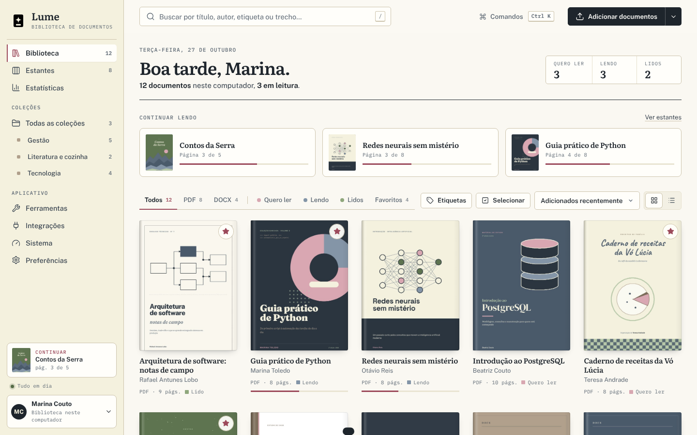
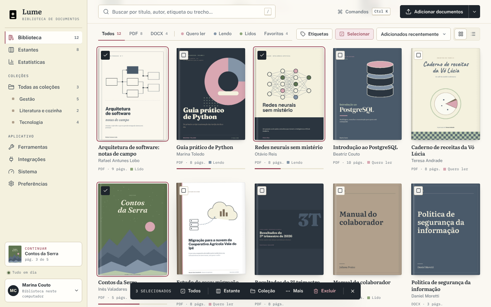
Para agir sobre vários documentos de uma vez, ligue a seleção com o botão Selecionar, com a tecla S ou com Shift + clique num cartão. Cada capa ganha uma caixa no canto; com a seleção ligada, clicar no cartão marca e desmarca em vez de abrir. Na visualização em lista, cada linha tem uma caixa e o cabeçalho seleciona todos.
| Botão da barra | O que faz |
|---|---|
| Todos | Marca (ou desmarca) todos os documentos carregados na tela. Também com Ctrl A. |
| Estante | Quero ler, Lendo, Lido ou tirar da estante. |
| Coleção | Adicionar a uma coleção existente, criar uma nova e já adicionar, ou (dentro de uma coleção) tirar dela. |
| Mais | Favoritar ou tirar dos favoritos; adicionar etiquetas (somam às que cada documento já tem); gerar a descrição de novo; ler os arquivos de novo; exportar só a seleção em CSV, JSON, BibTeX ou Markdown. |
| Excluir | Tira os documentos da biblioteca, depois de confirmar. Os arquivos originais continuam onde estavam. |
| × | Sai da seleção (também com Esc). |
Todas as ações usam uma única chamada à API (POST /api/v1/documents/batch, até 500 documentos), aplicada pelo núcleo com os mesmos serviços das ações individuais: os eventos ao vivo, os contadores e os webhooks continuam funcionando.
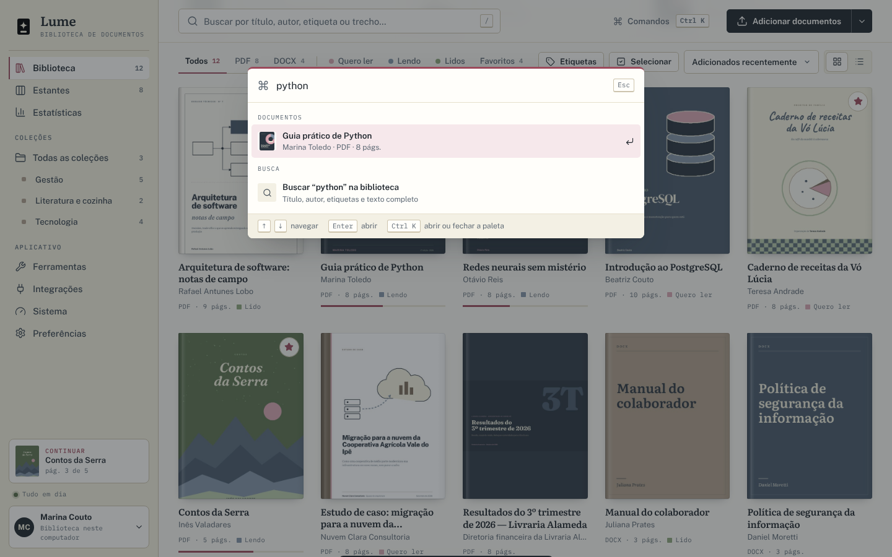
Ctrl K (ou o botão Comandos na barra superior) abre uma caixa única para fazer tudo pelo teclado. Digite parte de um nome, sem se preocupar com acentos:
Use ↑ ↓ para escolher, Enter para executar e Esc para fechar.
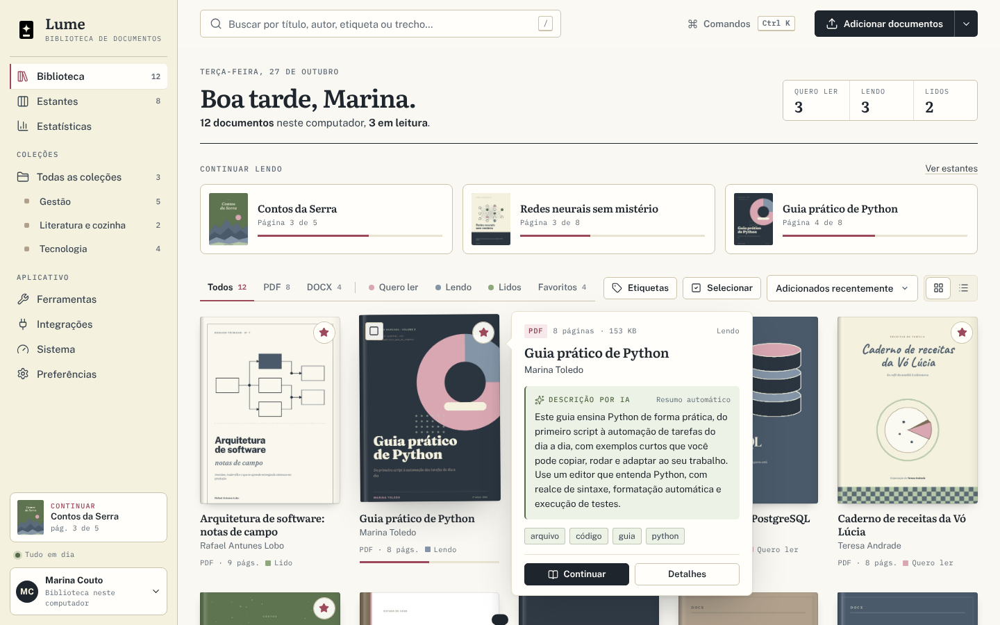
Pare o mouse sobre um cartão por um instante e a prévia abre ao lado: tipo, número de páginas, tamanho, estante, a descrição por IA (com a indicação de quem escreveu), as etiquetas e os botões Ler agora (ou Continuar) e Detalhes.
Ela também abre com o teclado, ao focar o cartão com Tab, e fica desligada enquanto a seleção em lote está ativa.
Quatro jeitos, todos com o mesmo resultado:
/api/v1/desktop/upload).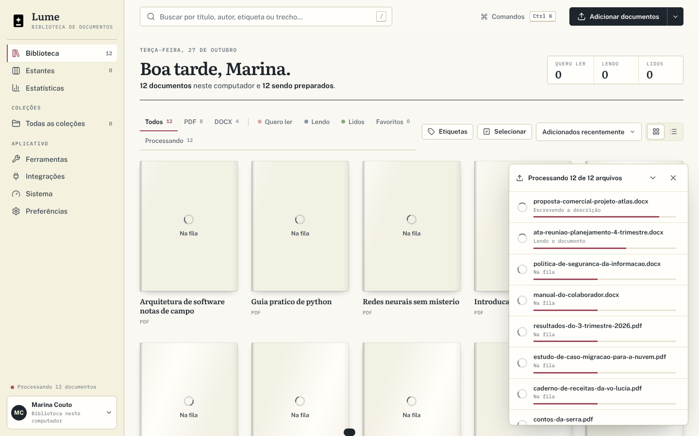
Cada arquivo é copiado para a pasta da biblioteca, com a impressão digital calculada no caminho; o original fica intocado. Se a mesma impressão digital já existir, o item aparece como Já estava na sua biblioteca. Arquivos .doc antigos, planilhas, arquivos vazios ou com conteúdo que não corresponde à extensão são recusados com a explicação na bandeja. O limite é de 500 MB por arquivo. Se você estiver dentro de uma coleção, o que for importado já entra nela.
Também dá para abrir arquivos direto no Lume: arraste PDFs ou DOCX sobre o ícone do Lume.exe ou use Abrir com no Explorador. Se o Lume já estiver aberto, a janela existente recebe os arquivos e vem para a frente.
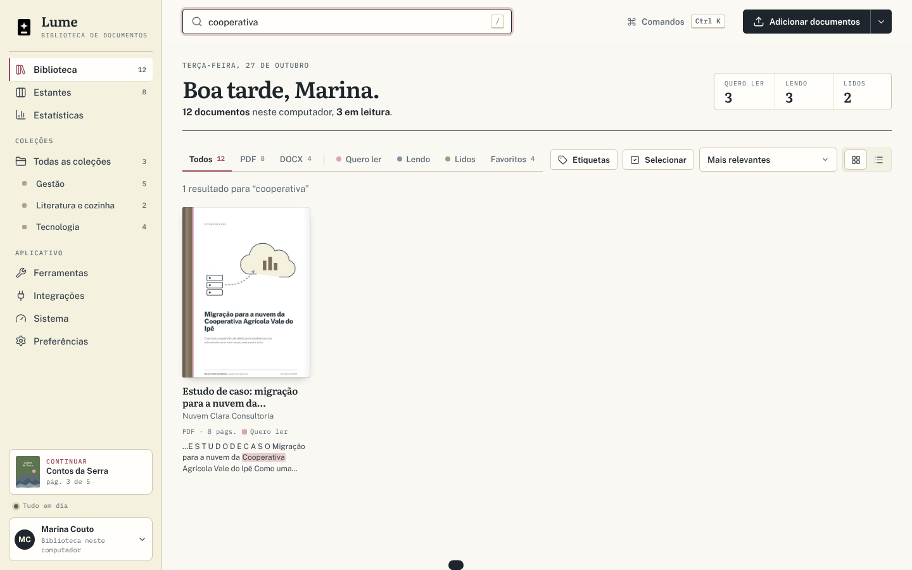
A busca procura no título, no autor, na descrição por IA, na sua descrição, nas etiquetas e no texto completo, sem diferenciar acentos nem maiúsculas. O trecho onde a palavra aparece vem destacado embaixo do cartão. Pressione / para ir à busca de qualquer tela, ou use a paleta (Ctrl K) para ver os melhores resultados sem sair da tela atual.
| Você digita | O Lume procura |
|---|---|
contrato aluguel | documentos com as duas palavras (e palavras que começam com elas: “contratos”, “aluguéis”) |
"reunião de planejamento" | a frase exata |
python -flask | documentos com “python” que não falam de “flask” |
seguran | partes do título também valem: “Política de segurança da informação” |
As etiquetas funcionam como um segundo filtro: clique numa etiqueta na página do documento ou escolha uma no botão Etiquetas da biblioteca. Busca, filtros e etiqueta se combinam.
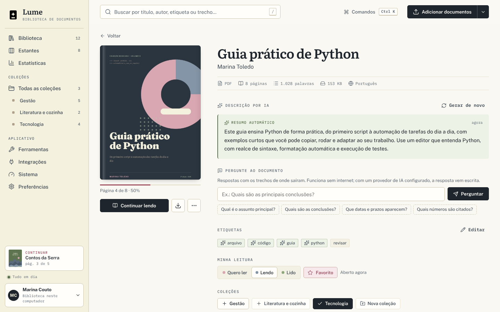
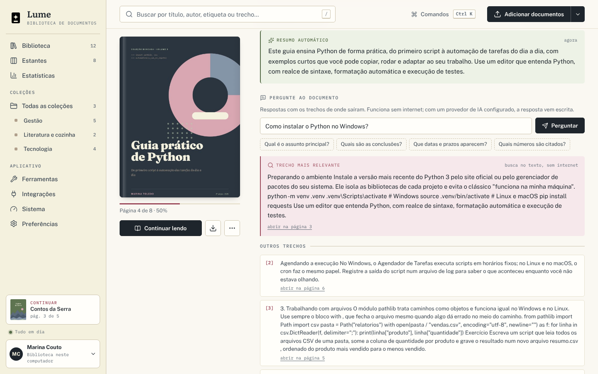
Na página de um documento pronto, escreva uma pergunta (de 3 a 500 caracteres) ou clique numa das sugestões: Qual é o assunto principal?, Quais são as conclusões?, Que datas e prazos aparecem?, Quais números são citados?
O funcionamento por dentro está em Como o “Pergunte” responde.
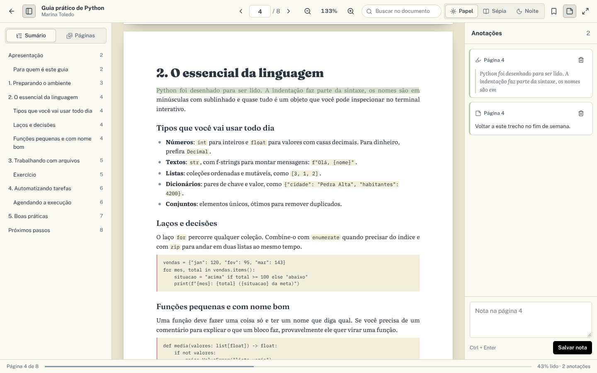
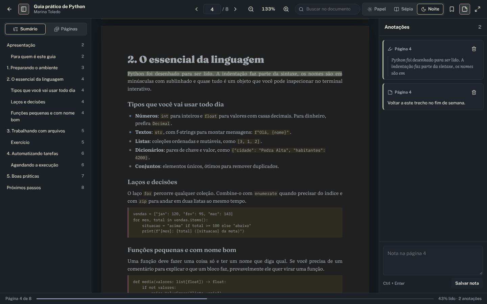
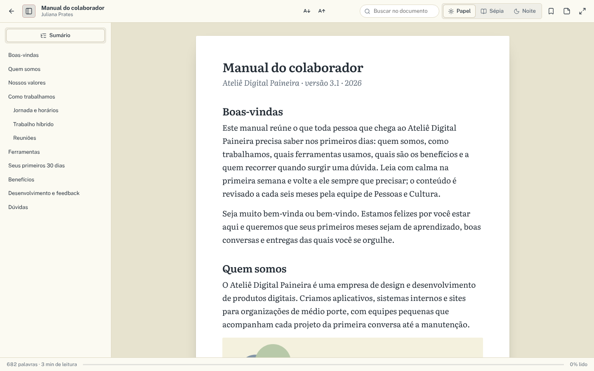
O DOCX é convertido em HTML de leitura pelo leitor em Java: títulos, listas, tabelas (com células mescladas), citações, links e imagens são mantidos; o resto da formatação do Word dá lugar a uma tipografia confortável em Literata. O sumário vem dos títulos (estilos Título 1, 2…). Os botões A− e A+ ajustam o tamanho da letra, que fica guardado. Destaques e notas funcionam como no PDF e ficam presos ao parágrafo.
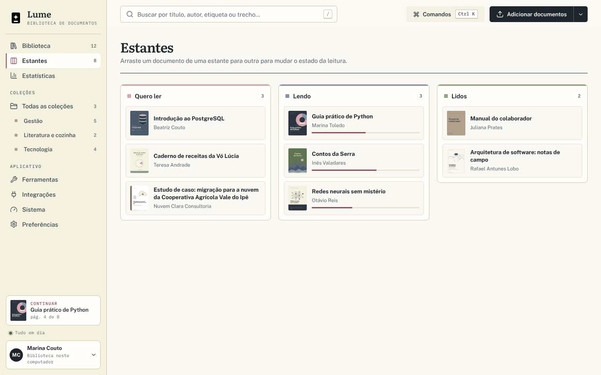
Três colunas, Quero ler, Lendo e Lidos. Abrir um documento no leitor coloca ele em Lendo automaticamente; arrastar entre colunas muda a estante; marcar como lido registra a data de término (que alimenta as Estatísticas e o evento shelf.finished dos webhooks). Para mover muitos de uma vez, use a seleção em lote na biblioteca.
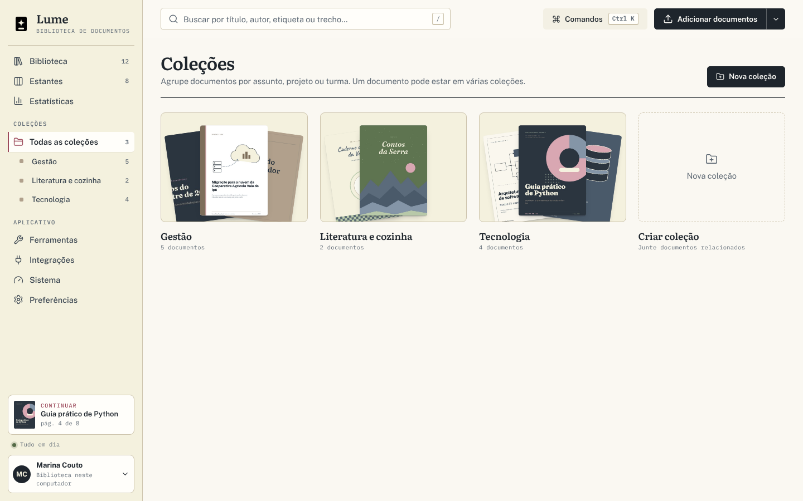
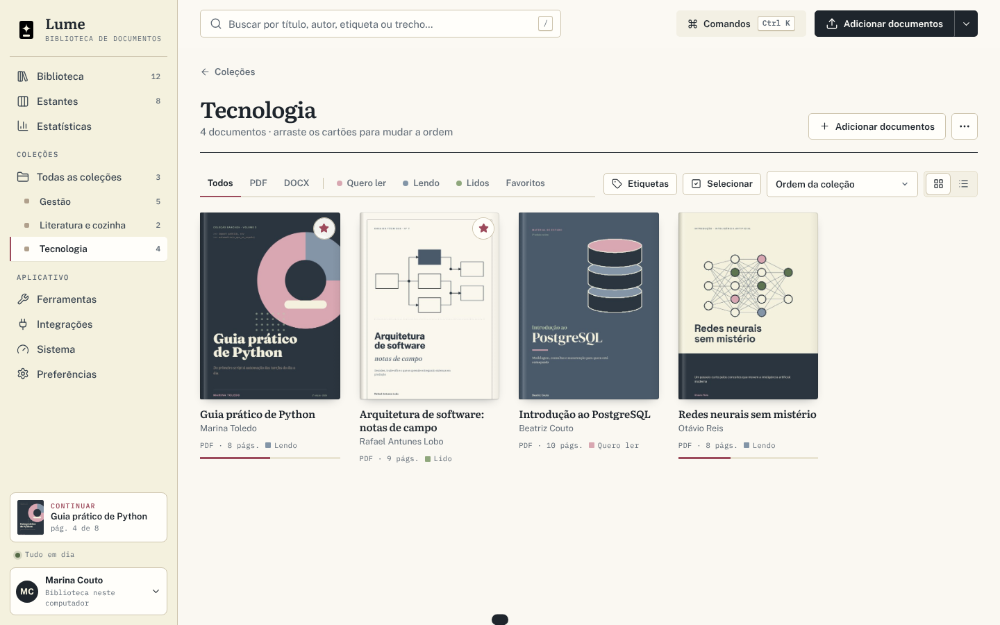
Agrupe documentos por assunto, projeto ou turma. Um documento pode estar em várias coleções. Dentro de uma coleção, arraste os cartões para mudar a ordem, use Adicionar documentos para escolher entre os que você já tem e o menu ⋯ para renomear ou excluir (excluir a coleção não apaga os documentos). Uma pasta monitorada pode mandar o que importar direto para uma coleção.
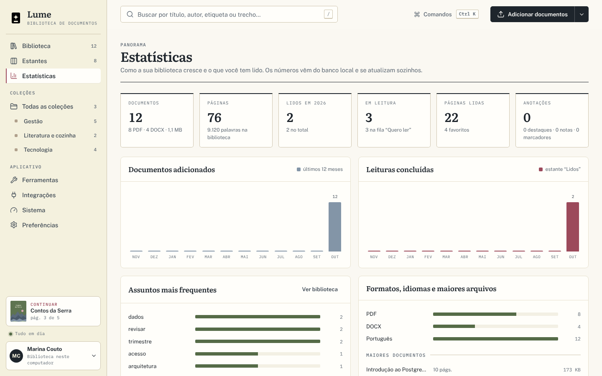
Os números vêm direto do banco local (rota GET /api/v1/insights) e se atualizam sozinhos quando algo muda. As consultas estão no manual do banco de dados.
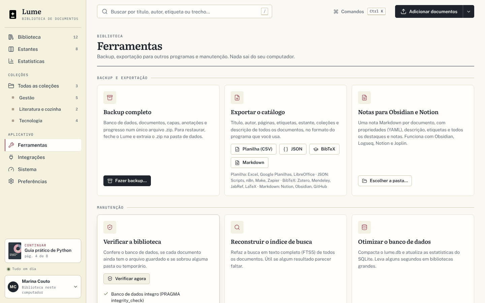
| Ferramenta | O que faz |
|---|---|
| Backup completo | Banco, documentos, capas, anotações e progresso num único .zip, salvo onde você escolher. Depois, Mostrar no Explorador. |
| Exportar o catálogo | Planilha (CSV), JSON, BibTeX ou Markdown, com título, autor, páginas, etiquetas, estante, coleções e descrição de todos os documentos. |
| Notas para Obsidian e Notion | Uma nota Markdown por documento, numa pasta escolhida, com propriedades, descrição, destaques e notas. |
| Verificar a biblioteca | Confere o banco (PRAGMA integrity_check), se cada documento ainda tem o arquivo guardado e se sobrou pasta ou temporário. |
| Reconstruir o índice de busca | Refaz a busca em texto completo (FTS5) de todos os documentos. |
| Otimizar o banco de dados | Compacta o lume.db (VACUUM) e atualiza as estatísticas do SQLite (PRAGMA optimize); mostra o tamanho antes e depois. |
| Limpar sobras | Apaga pastas de documentos já excluídos e temporários de importações interrompidas. |
| Descrever tudo de novo | Põe todos os documentos prontos na fila da descrição, com o provedor atual (pede confirmação; as etiquetas escolhidas por você continuam). |
Os formatos de exportação e o backup estão detalhados no capítulo 07.
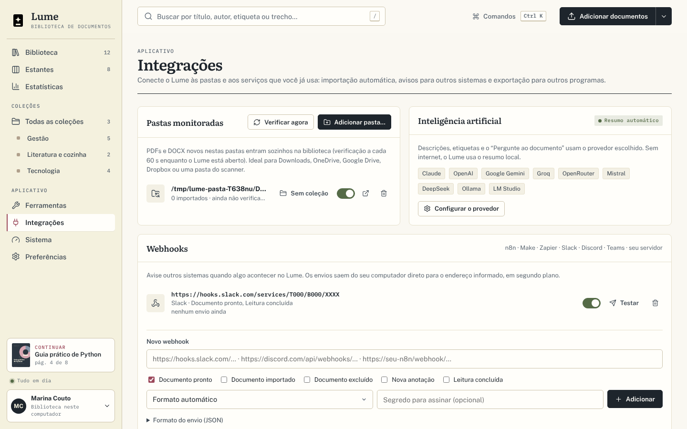
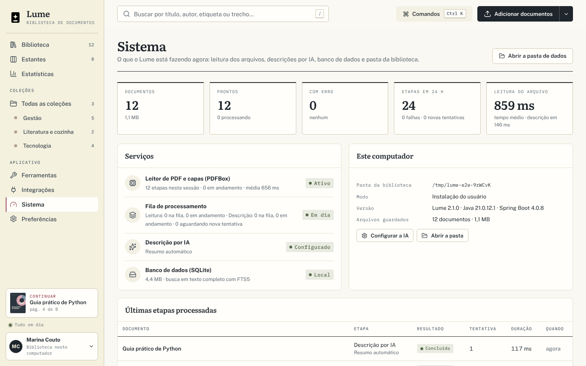
Mostra o que o Lume está fazendo: quantos documentos estão prontos, processando ou com erro, o estado do leitor de PDF (PDFBox) e das filas, o provedor de IA, o tamanho do banco, a pasta de dados, a versão do Lume e do Java e as últimas etapas com a duração e, quando houver, o motivo da falha. Tentar todos de novo devolve para a fila os documentos com erro.
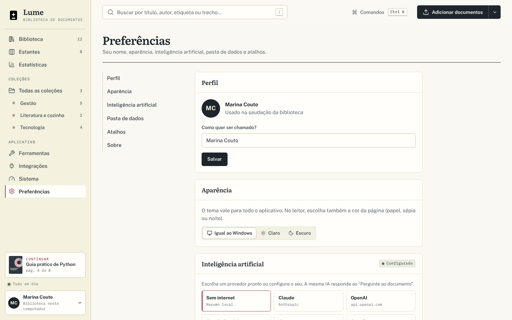
O nome usado na saudação (o padrão é o seu usuário do Windows), o tema (igual ao Windows, claro ou escuro), a Inteligência artificial com os provedores prontos e o botão Testar, a pasta de dados, os atalhos de teclado e as versões dos componentes (Lume, Java, Spring Boot, Tomcat, PDFBox e SQLite).
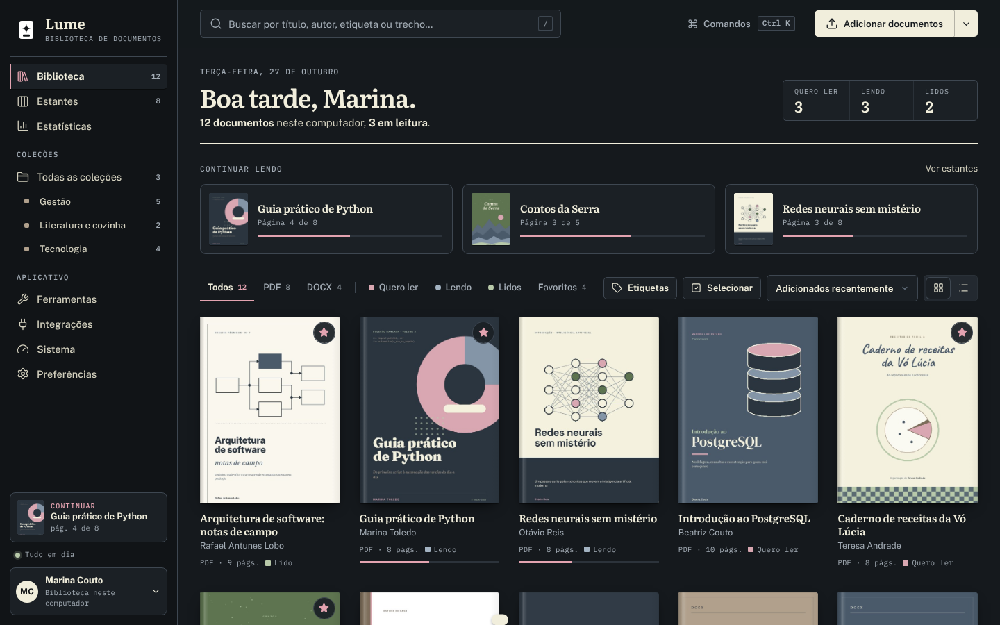
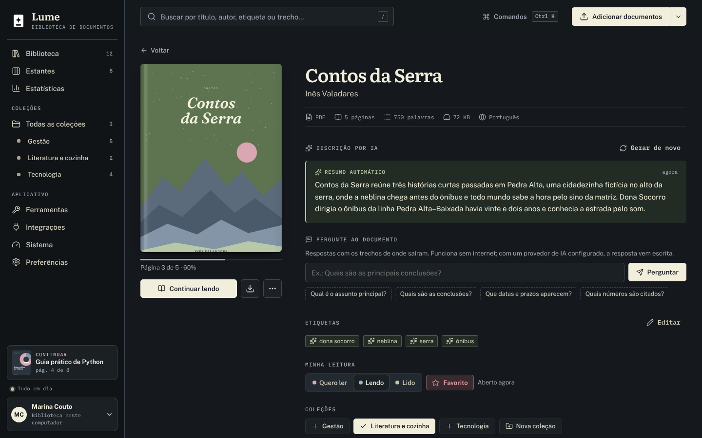
O tema acompanha o Windows por padrão e pode ser fixado em claro ou escuro no menu do perfil, em Preferências ou na paleta de comandos. No escuro, a assinatura passa a ser o rosé claro #E3A3B0.
Quase tudo pode ser feito sem o mouse. A tecla ? abre a lista de atalhos em qualquer tela, e a paleta de comandos reúne telas, ações e documentos.
| Tecla | Onde | O que faz |
|---|---|---|
| Ctrl K 2.1.0 | Qualquer tela | Abre ou fecha a paleta de comandos |
| ? 2.1.0 | Qualquer tela | Lista de atalhos |
| / | Qualquer tela | Vai para a busca |
| U | Qualquer tela | Adicionar documentos |
| S 2.1.0 | Biblioteca | Liga a seleção múltipla (de outras telas, volta para a biblioteca) |
| Shift + clique 2.1.0 | Biblioteca | Seleciona um documento sem abrir |
| Ctrl A 2.1.0 | Seleção | Seleciona todos os documentos carregados |
| Esc | Seleção · paleta · leitor | Sai da seleção, fecha a paleta ou sai do foco e depois do leitor |
| ↑ ↓ Enter | Paleta | Escolhe e executa |
| ← → | Leitor de PDF | Página anterior e próxima |
| + − | Leitor | Zoom (PDF) ou tamanho da letra (DOCX) |
| F | Leitor | Modo foco |
| Ctrl F | Leitor | Buscar dentro do documento |
| Ctrl Enter | Nota | Salvar a nota |
role="switch"), a barra de seleção (role="toolbar"), a paleta (role="dialog" e listbox) e as respostas do “Pergunte ao documento” (aria-live).prefers-reduced-motion), animações e transições são desligadas.Cada documento recebe uma descrição de duas ou três frases e até quatro etiquetas, e pode ser consultado pelo “Pergunte ao documento”. Por padrão tudo isso é feito no próprio computador, sem internet e sem custo.
Em Preferências → Inteligência artificial, um clique num dos cartões preenche o provedor, o endereço e um modelo sugerido (que pode ser trocado). A mesma configuração vale para a descrição, as etiquetas e o “Pergunte ao documento”.
| Cartão | Provedor | Endereço da API | Modelo sugerido |
|---|---|---|---|
| Sem internet | local | — | resumo extrativo em Java |
| Claude | anthropic | https://api.anthropic.com | claude-haiku-5-5 |
| OpenAI | openai | https://api.openai.com/v1 | gpt-4o-mini |
| Google Gemini | openai | https://generativelanguage.googleapis.com/v1beta/openai | gemini-2.5-flash |
| Groq | openai | https://api.groq.com/openai/v1 | llama-3.3-70b-versatile |
| OpenRouter | openai | https://openrouter.ai/api/v1 | openrouter/auto |
| Mistral | openai | https://api.mistral.ai/v1 | mistral-small-latest |
| DeepSeek | openai | https://api.deepseek.com/v1 | deepseek-chat |
| Ollama | openai | http://localhost:11434/v1 | llama3.1 (no computador) |
| LM Studio | openai | http://localhost:1234/v1 | o modelo carregado (no computador) |
O resumo automático escolhe as frases que melhor representam o texto, ignorando capa, cabeçalhos, rodapés e títulos (LocalSummarizer); as etiquetas vêm das palavras e pares de palavras mais característicos. Os demais cartões usam a API de Mensagens da Anthropic (Claude) ou a rota /chat/completions das APIs compatíveis com OpenAI.
document_content) é dividido em trechos de 400 a 700 caracteres, respeitando parágrafos; no PDF, cada trecho guarda a página (as páginas vêm separadas por \f).PassageFinder, k1 = 1,4 e b = 0,72).Para a descrição, vão só o título, o autor, o tipo, o número de páginas, até 30 títulos do sumário e um trecho do texto (por padrão até 12.000 caracteres: três quartos do começo e um quarto do meio). Para o “Pergunte”, vão o título, o autor, a pergunta e os seis trechos escolhidos. O arquivo original nunca é enviado. Com o resumo automático, nada sai do computador. As chamadas usam o cliente HTTP do próprio Java, que respeita o proxy do sistema.
dpapi:; só o seu usuário do Windows consegue abrir. Ela não volta para a tela depois de salva e pode ser apagada em Preferências. Chaves salvas pela versão 1 (Electron) não abrem no Java: informe de novo.Sem internet, chave errada, limite de uso ou resposta fora do formato: o Lume não deixa o documento parado. Ele usa o resumo automático e registra o motivo na etapa (veja em Sistema → Últimas etapas). Textos com menos de 200 caracteres, como PDFs digitalizados sem texto, vão direto para o resumo automático.
O Lume conversa com as pastas e os programas que você já usa: importa sozinho o que aparece numa pasta, avisa outros sistemas quando algo acontece e entrega o catálogo e as notas nos formatos de cada ferramenta.
Em Integrações → Adicionar pasta…, escolha até 10 pastas. Enquanto o Lume está aberto, o WatchFolderService verifica as pastas ativas a cada 60 segundos (a primeira verificação acontece cerca de 20 segundos depois de abrir) e importa os PDFs e DOCX novos, inclusive das subpastas, pelo mesmo caminho de uma importação normal.
watch.imported).Um webhook é um endereço que recebe um aviso (um POST com JSON) quando algo acontece no Lume. Serve para ligar o Lume a n8n, Make, Zapier, Power Automate, Slack, Discord, Microsoft Teams (por um fluxo) ou ao seu próprio servidor. Cadastre até 10.
| Evento | Rótulo na tela | Quando dispara |
|---|---|---|
document.ready | Documento pronto | O documento terminou de ser lido e descrito (é o evento padrão) |
document.created | Documento importado | Um arquivo novo entrou na biblioteca (por qualquer caminho, inclusive pastas monitoradas) |
document.deleted | Documento excluído | Um documento saiu da biblioteca (o corpo leva só o id) |
annotation.created | Nova anotação | Um destaque, nota ou marcador foi criado (o corpo inclui a anotação) |
shelf.finished | Leitura concluída | O documento foi para a estante Lidos |
| Formato | Corpo enviado |
|---|---|
| JSON | O objeto completo abaixo, para automações e servidores próprios. |
| Slack | {"text": "📄 Pronto no Lume: “Relatório anual” — …"}; escolhido sozinho para endereços hooks.slack.com. |
| Discord | {"content": "…"}, com a mesma frase; escolhido sozinho para discord.com/api/webhooks. |
POST https://seu-servidor/lume
Content-Type: application/json
User-Agent: Lume-Desktop
X-Lume-Event: document.ready
X-Lume-Signature: sha256=3f1c… (só quando há segredo)
{
"event": "document.ready",
"sent_at": "2026-10-27T13:00:00.000Z",
"app": "Lume",
"document": {
"id": "6f1e…", "title": "Relatório anual", "author": "Equipe financeira",
"kind": "pdf", "page_count": 42,
"summary": "Resultados do ano com…", "tags": ["finanças", "relatório"]
}
}Com um segredo, cada envio leva o cabeçalho X-Lume-Signature: sha256=<HMAC-SHA256 do corpo>; quem recebe recalcula o HMAC com o mesmo segredo e descarta o que não confere. O segredo é guardado cifrado pelo cofre do Windows (DPAPI), como a chave da IA, e nunca volta para a tela.
# Conferir a assinatura (Python)
import hmac, hashlib
esperado = "sha256=" + hmac.new(SEGREDO.encode(), corpo_bruto, hashlib.sha256).hexdigest()
valido = hmac.compare_digest(esperado, request.headers["X-Lume-Signature"])Os envios saem em segundo plano, um fio só para webhooks, com tempo limite de 10 segundos; o resultado (código HTTP ou erro) e a hora do último envio aparecem na linha do webhook. Testar manda na hora um evento de exemplo e mostra a resposta.
| Formato | Para | Conteúdo |
|---|---|---|
| CSV | Excel, Google Planilhas, LibreOffice | Separado por ;, em UTF-8 com BOM (abre com acentos no Excel em português). Colunas: Título, Autor, Tipo, Páginas, Palavras, Tamanho (bytes), Estante, Favorito, Progresso (%), Etiquetas e Coleções (separadas por |), Idioma, Adicionado em, Terminado em, Arquivo original, Descrição. |
| JSON | Scripts, n8n, Make, Zapier | Uma lista com os mesmos campos, mais id e o resumo da IA. |
| BibTeX | Zotero, Mendeley, JabRef, LaTeX | Uma entrada @misc por documento, com chave estável (sobrenome, ano e primeira palavra do título), title, author, year, keywords, note (a descrição) e file. |
| Markdown | Notion, GitHub, wikis | Catálogo agrupado por estante, com título, autor, páginas, etiquetas e descrição. |
| Notas .md | Obsidian, Logseq, Notion, Joplin | Uma nota por documento, numa pasta escolhida: propriedades YAML (title, author, kind, pages, tags, shelf, favorite, progress, collections, added, finished, source, lume_id), Descrição e Destaques e notas por página, com as citações. |
O catálogo inteiro sai por Ferramentas, Integrações ou pela paleta; só alguns documentos, pela seleção em lote (Mais → Exportar seleção). O arquivo é salvo pelo diálogo do Windows com o nome lume-catalogo-AAAA-MM-DD.
Lume-backup-AAAA-MM-DD.zip. Pode ser feito com o Lume aberto.VACUUM INTO (sem parar o que estiver acontecendo) e grava no zip o lume.db, a pasta documentos/ inteira (originais, capas, HTML de leitura e imagens) e um LEIAME.txt com as instruções.lume.db, lume.db-wal, lume.db-shm e documentos, extraia o zip ali dentro e abra o Lume de novo.Por dentro, o Lume para Windows repete as peças da versão web com o núcleo em Java: o servidor virou uma aplicação Spring Boot que só atende o próprio computador, o WebSocket virou Server-Sent Events e PostgreSQL e Redis deram lugar ao SQLite e a uma fila em memória.
| Peça | Onde está | O que faz |
|---|---|---|
| Lançador | packaging/windows/ | O Lume.exe (NSIS): extrai o Java reduzido e o aplicativo e abre o Java com a tela de abertura. |
| Aplicação | LumeApplication, desktop/ | Pasta de dados, instância única, porta local, janela do Edge e encerramento quando a janela fecha. |
| API local | web/ | Rotas REST (/api/v1/documents…), /api/v1/desktop/*, /api/v1/tools/*, /api/v1/integrations/* e /api/v1/events, com Spring MVC. |
| Biblioteca | library/ | Importação com SHA-256, busca FTS5, etiquetas, leitura, anotações, coleções, ações em lote (BatchService), parecidos (DiscoveryService) e estatísticas (InsightsService). |
| Pipeline | pipeline/ | Filas de leitura e descrição, tentativas, recuperação e a tela Sistema. |
| Processador | processing/, docx/ | PDFBox (texto, sumário, metadados, capa), leitor de DOCX (zip + StAX → HTML), capas Java2D e higienização com jsoup. |
| IA | ai/ | Resumo local, provedores (Claude e compatíveis com OpenAI) e a busca de trechos do “Pergunte” (PassageFinder). |
| Ferramentas | tools/ | Backup em zip, exportação do catálogo e das notas, verificação e manutenção do banco (ToolsService). |
| Integrações | integrations/ | Pastas monitoradas (WatchFolderService) e webhooks (WebhookService), assinando o barramento de eventos. |
| Banco | db/ | SQLite com migrações, chaves estrangeiras, restrições e busca FTS5. Detalhado no manual do banco de dados. |
| Interface | src/main/resources/static/ | A interface, servida pelo Spring: módulos ES sem build. Fala com a API por fetch e recebe eventos por SSE. |
LibraryService.importFile): o arquivo é copiado para tmp\ calculando o SHA-256; o tipo é conferido pelo conteúdo (cabeçalho %PDF- ou zip com word/document.xml); se a impressão digital é nova, o documento é criado como queued e o arquivo vai para documentos\<id>\original.pdf. Evento document.created.extract): PDFs vão para o PdfBoxProcessor, que devolve texto (páginas separadas por \f), sumário, metadados e a capa em JPEG; DOCX são lidos pelo DocxExtractor, que gera o HTML de leitura (higienizado), as imagens e a capa tipográfica.describe): o texto vai para o provedor de IA escolhido; o resultado e as etiquetas são gravados e o índice de busca é atualizado.document.ready também dispara os webhooks.ExecutorService, sem travar a interface.ScheduledExecutorService). Depois da terceira, o documento fica Com erro. Falhas definitivas (PDF protegido por senha, arquivo corrompido, .doc antigo) vão direto para Com erro.jobs: é o histórico da tela Sistema.127.0.0.1 (porta 47820 ou a próxima livre). Nada fica acessível pela rede./entrar?chave=… com uma chave aleatória; o servidor troca a chave por um cookie lume_sessao (HttpOnly, SameSite=Strict). A API e as páginas exigem esse cookie, então sites abertos no navegador não conseguem usar a API.http ou https, com assinatura HMAC opcional e tempo limite de 10 s. Abrir pasta: /desktop/open-path só abre caminhos que existem.Document-Library-Desktop/ ├── Lume.exe executável portátil para Windows (scripts/empacotar-windows.sh) ├── pom.xml Maven: Java 21, Spring Boot 4, PDFBox, sqlite-jdbc, jsoup, JNA ├── src/main/java/io/github/ravelroot/lume/ │ ├── LumeApplication.java pasta de dados, instância única, porta e janela │ ├── core/ erros da API, textos, JSON, datas │ ├── db/ Database (JdbcTemplate + trava) e Migrations │ ├── library/ importação, busca, leitura, anotações, coleções, lote, parecidos, estatísticas │ ├── pipeline/ fila, etapas, retentativas, recuperação, Sistema │ ├── processing/ PDFBox, capas Java2D, paleta, jsoup │ ├── docx/ leitor de DOCX (zip + StAX → HTML) │ ├── ai/ resumo local, provedores, trechos do “Pergunte” │ ├── tools/ backup, exportações, manutenção │ ├── integrations/ pastas monitoradas e webhooks │ ├── settings/ preferências e cofre (DPAPI) │ ├── events/ eventos ao vivo │ ├── web/ controladores REST, SSE, filtros de sessão │ └── desktop/ janela (Edge), diálogos, Explorador, instância única ├── src/main/resources/static/ interface (HTML, CSS, JS, fontes, pdf.js) ├── src/test/java/ JUnit 6 + Spring Boot Test ├── e2e/ teste de interface com Playwright ├── packaging/windows/ lançador NSIS e ícone ├── scripts/ empacotamento do Lume.exe ├── exemplos/ 12 documentos fictícios ├── docs/ manuais em PDF, fontes HTML dos manuais e prints └── .github/workflows/ CI e atividade diária
Para quem quiser estender o Lume: a interface conversa com o núcleo Java por rotas REST em http://127.0.0.1:47820/api/v1, com JSON nos dois sentidos e o cookie de sessão. As respostas de erro têm sempre {"error", "message"}.
| Método | Rota | O que faz |
|---|---|---|
| GET | /documents | Lista com q, kind, status, shelf, favorite, collection, tag, sort, page, page_size |
| GET · PATCH · DELETE | /documents/{id} | Detalhes, edição de título/autor/descrição e exclusão |
| GET | /documents/{id}/file | Arquivo original, com Range e ETag (?download=1 para anexo) |
| GET | /documents/{id}/cover · /reader · /media/{nome} | Capa, HTML de leitura do DOCX e imagens |
| POST | /documents/{id}/reprocess · /describe | Ler o arquivo de novo · gerar a descrição de novo |
| PUT | /documents/{id}/tags | Substitui as etiquetas (até 12) |
| GET · PATCH | /documents/{id}/reading | Estante, página, progresso, favorito; POST …/open registra a abertura |
| GET · POST | /documents/{id}/annotations | Anotações do documento; …/annotations/export em Markdown |
| PATCH · DELETE | /annotations/{id} | Edita ou apaga uma anotação |
| GET · POST | /collections · /collections/{id} | Coleções (também PATCH e DELETE); …/documents põe e tira, …/order ordena |
| GET | /stats · /tags | Contadores do menu e “continuar lendo” · etiquetas em uso |
| GET · POST | /system · /system/retry-failed | Painel do sistema · devolver os com erro para a fila |
| GET · PATCH | /me | Nome, tema e preferências do leitor |
| GET · PUT · POST | /settings/ai · /settings/ai/test | Provedor de IA (a chave nunca é devolvida) · teste |
| GET | /events | Eventos ao vivo (Server-Sent Events) |
| Método | Rota | Corpo e resposta |
|---|---|---|
| POST | /documents/batch | {ids: [...] (até 500), action, value} com action = shelf (value "", para_ler, lendo, lido), favorite, unfavorite, tags_add (lista de nomes), collection_add, collection_remove (id), delete, reprocess, redescribe → {ok, affected} |
| POST | /documents/{id}/ask | {question} (3 a 500 caracteres) → {answer, mode, model, passages: [{text, page, score}], warning}; mode é local, anthropic ou openai |
| GET | /documents/{id}/related | ?limit=6 → documentos prontos parecidos, no mesmo formato da listagem |
| GET | /insights | {totals, reading, kinds, added_by_month, finished_by_month, top_tags, largest, languages} |
| POST | /tools/backup | Diálogo “Salvar” do Windows → {ok, path, bytes, documents} (ou {ok: false} se cancelar) |
| GET | /tools/export/catalog | ?format=csv|json|bibtex|markdown&ids=a,b → {filename, content, mime, count} |
| POST | /tools/export/markdown-folder | Diálogo de pasta → {ok, folder, files} |
| POST | /tools/maintenance | {action}: check, reindex, optimize, cleanup ou redescribe |
| GET | /integrations | {watch_folders, webhooks, scan_interval_s, webhook_events} |
| POST · PATCH · DELETE | /integrations/watch-folders · /{id} | Adiciona ({path?, collection?}; sem path, abre o seletor), altera {enabled, collection} ou remove; POST …/scan → {imported, duplicates, failed} |
| POST · PATCH · DELETE | /integrations/webhooks · /{id} | Cadastra {url, events, format, secret}, altera ou remove; POST …/{id}/test → {ok, status, message} |
| POST | /desktop/open-path | {path}: abre a pasta (ou mostra o arquivo) no Explorador, se existir |
// Pôr três documentos na estante "Lendo"
await fetch("/api/v1/documents/batch", { method: "POST", headers: { "Content-Type": "application/json" },
body: JSON.stringify({ ids: [a, b, c], action: "shelf", value: "lendo" }) }); // → {"ok": true, "affected": 3}
// Perguntar ao documento
await fetch(`/api/v1/documents/${id}/ask`, { method: "POST", headers: { "Content-Type": "application/json" },
body: JSON.stringify({ question: "Quais são os prazos?" }) });
// → {"answer": "…", "mode": "local", "passages": [{"text": "…", "page": 4, "score": 3.2}, …]}O que a janela pede ao sistema passa por /api/v1/desktop. O arquivo js/desktop.js da interface expõe essas rotas como window.lume, com as mesmas funções da versão em Electron, então o resto da interface não depende de onde está rodando.
| Rota | Função | O que faz |
|---|---|---|
import | importFiles(caminhos, {collection}) | Importa arquivos pelo caminho no disco |
upload | upload(arquivo) | Recebe um arquivo solto na janela (corpo = bytes) |
expand | expandPaths(caminhos) | Troca pastas pela lista dos PDFs e DOCX dentro delas |
pick-files · pick-folder | pickFiles() · pickFolder() | Diálogos de abrir arquivos e pasta |
open-file · show-in-folder · save-copy | openFile(id) · showInFolder(id) · saveCopy(id) | Programa padrão, Explorador e salvar cópia |
save-text | saveText(nome, texto) | Salvar texto; o filtro do diálogo segue a extensão (.md, .csv, .json, .bib, .txt) |
open-path 2.1.0 | openPath(caminho) | Abre uma pasta ou mostra um arquivo (depois de backup e exportação) |
open-data-folder · open-external · info | openDataFolder() · openExternal(url) · info() | Pasta de dados · link no navegador padrão · versões e caminho |
window (PUT) | — | Guarda posição e tamanho da janela para a próxima abertura |
GET /api/v1/events é um fluxo Server-Sent Events; cada mensagem é um JSON com type e os dados. O evento só avisa o que mudou: a interface busca o documento de novo na API.
| Evento | Quando |
|---|---|
document.created · document.updated · document.deleted | Documento importado, mudou de etapa ou de dados, excluído |
document.ready 2.1.0 | O pipeline terminou o documento como pronto |
reading.updated · shelf.finished 2.1.0 | Estante, página ou favorito mudaram · o documento foi para “Lidos” |
annotation.created 2.1.0 | Nova anotação |
collections.changed · system.changed | Coleções alteradas · algo mudou na tela Sistema |
watch.imported 2.1.0 | Uma pasta monitorada trouxe documentos novos ({folder, count}) |
import.failed | Um arquivo foi recusado na importação |
O código-fonte está todo no repositório. Para rodar a partir dele você precisa do JDK 21, do Maven 3.9 e do Git; o Node.js só é usado no teste de interface e o Python só para gerar estes manuais.
git clone https://github.com/ravelroot/Document-Library-Desktop.git
cd Document-Library-Desktop
mvn spring-boot:run # compila e abre o Lume (janela no Edge)
mvn spring-boot:run -Dspring-boot.run.arguments=--sem-janela # só o servidorEm desenvolvimento, a pasta de dados é a mesma do aplicativo empacotado. Para usar outra, defina LUME_DATA_DIR antes de rodar (no PowerShell: $env:LUME_DATA_DIR="C:\temp\lume"). Com --sem-janela, o endereço de entrada aparece no console (Lume pronto: http://127.0.0.1:47820/entrar?chave=…). O intervalo das pastas monitoradas vem da propriedade lume.watch-interval-s (padrão 60 segundos; 0 desliga o agendador, como nos testes).
| Comando | O que verifica |
|---|---|
mvn test | JUnit 6 e Spring Boot Test: banco e restrições, migrações, importação, busca, etiquetas, estantes, anotações, coleções, pipeline com falhas e recuperação, API, Range, sessão, leitor de DOCX, PDFBox, capas, higienização do HTML, provedores de IA e, na 2.1.0, ações em lote, “Pergunte ao documento”, parecidos, estatísticas, exportações, backup, manutenção, pastas monitoradas e webhooks |
npm --prefix e2e installnpm --prefix e2e test | Sobe o Lume sem janela, importa os 12 exemplos, espera o processamento e percorre as telas no Chromium (Playwright), incluindo seleção em lote, paleta, “Pergunte”, Estatísticas, Ferramentas e Integrações |
npm --prefix e2e test -- --prints | O mesmo, salvando os prints em docs/images |
bash scripts/empacotar-windows.sh # Linux ou Git Bash no Windows; precisa de makensis (NSIS)
# 1. mvn package + dependências em target/lib
# 2. jlink: Java 21 reduzido para Windows x64 (só os módulos usados)
# 3. NSIS: Lume.exe portátil com o Java, o lume.jar e a tela de aberturaO script baixa o JDK Temurin 21 para Windows (só os jmods), monta o Java reduzido, tira do driver do SQLite as bibliotecas nativas de outros sistemas e gera o Lume.exe com compressão LZMA, conferindo o limite de 100 MB por arquivo do GitHub. O executável não tem assinatura digital; para assinar, use um certificado de assinatura de código no signtool.
pip install weasyprint==70.0
python docs/fonte/gerar_pdfs.py # Manual-Lume-Desktop.pdf e Banco-de-Dados-Lume-Desktop.pdf
python docs/fonte/gerar_pdfs.py manual # só o manualOs manuais são escritos em HTML e CSS (docs/fonte/), com as fontes da própria interface, e gravados na raiz do repositório e em docs/. Gere os prints antes, com o teste de interface.
O workflow ci.yml roda em cada envio para o GitHub: mvn verify no Ubuntu com o JDK 21, o teste de interface com Playwright e a geração do Lume.exe, guardado como artefato da execução.
O workflow diario.yml registra uma linha em .github/atividade.txt duas vezes por dia, às 10:47 e às 20:26 (Brasília), com horários reserva (12:09, 13:53 e 16:17 no 1º turno; 21:58 e 23:11 no 2º), todos em minutos quebrados, que o GitHub atrasa menos. A data do registro vem do horário agendado: uma execução atrasada que passe da meia-noite conta para o dia certo. Ele baixa só a pasta .github. Para ativar:
GIT_NAME (seu nome) e GIT_EMAIL (use o e-mail noreply do GitHub, em Settings → Emails).main, rode git pull --rebase antes de cada git push.Os casos mais comuns e o que fazer. O arquivo lume.log, na pasta de dados, registra o que aconteceu em cada abertura; Ferramentas → Verificar a biblioteca confere o banco e os arquivos.
| Sintoma | O que fazer |
|---|---|
O Windows bloqueia o Lume.exe | Clique em Mais informações → Executar assim mesmo. Se o antivírus apagar o arquivo, restaure-o da quarentena e adicione uma exceção (executáveis portáteis sem assinatura às vezes são confundidos). |
| Demora para abrir | A primeira abertura extrai o Java e o aplicativo (alguns segundos); as seguintes só sobem o Spring Boot. Em pendrives lentos, a primeira abertura demora mais. |
| A janela não aparece | O Lume usa o Microsoft Edge. Atualize o Edge pelo Windows Update; sem ele, o Lume abre no navegador padrão. Veja o motivo em lume.log. |
| “O Lume já está aberto, mas não respondeu” | Feche o processo javaw.exe do Lume no Gerenciador de Tarefas e abra de novo. |
| Um PDF ficou “Com erro” | Veja a mensagem nos detalhes. Protegido por senha: abra num leitor de PDF, salve uma cópia sem senha e importe de novo. Erros passageiros: Ler o arquivo de novo (ou, para vários, a seleção em lote). |
| PDF sem descrição útil ou sem resposta no “Pergunte” | PDFs digitalizados (só imagem) não têm texto; a descrição avisa isso. Passe o arquivo por um OCR e importe de novo. |
| A descrição ou a resposta não usa a IA externa | Confira a chave e clique em Testar em Preferências. O motivo da queda para o modo local aparece em Sistema e no aviso abaixo da resposta. |
| Uma pasta monitorada não importa | Confira se a pasta está ativa e existe (a linha mostra “Pasta não encontrada”), clique em Verificar agora e veja lume.log. Arquivos recusados uma vez só são tentados de novo quando mudam; arquivos só “na nuvem” do OneDrive precisam estar baixados. |
| O webhook mostra erro | Use Testar e leia o código HTTP. 401/403: confira o endereço completo e o segredo; tempo esgotado: o serviço não respondeu em 10 s; endereços internos exigem que o computador alcance a rede deles. |
| A busca não acha algo que existe | Ferramentas → Reconstruir o índice de busca. |
| O banco cresceu muito | Ferramentas → Limpar sobras e depois Otimizar o banco de dados. |
| “O banco foi criado por uma versão mais nova” | Você abriu uma biblioteca com um Lume mais antigo. Use o executável mais novo. |
| Quero começar do zero | Faça um backup, feche o Lume e renomeie a pasta de dados (veja em Sistema). Na próxima abertura, uma biblioteca vazia é criada. |
| Levar para outro computador | Faça um Backup completo e restaure no outro computador (ou use o modo portátil). A chave de API e os segredos de webhook não vão junto: cadastre de novo. |
Termos usados neste manual, os componentes de terceiros e a história das versões.
| Componente | Uso no projeto | Licença |
|---|---|---|
| Spring Boot / Spring Framework | Núcleo, API REST e injeção de dependências | Apache-2.0 |
| Apache Tomcat | Servidor HTTP embutido (127.0.0.1) | Apache-2.0 |
| Apache PDFBox | Texto, sumário, metadados e capas dos PDFs | Apache-2.0 |
| SQLite JDBC | Banco local com busca FTS5 | Apache-2.0 |
| jsoup | Lista de permissões do HTML de leitura | MIT |
| JNA | Cofre do Windows (DPAPI), registro e foco da janela | Apache-2.0 / LGPL-2.1 |
| Jackson | JSON da API | Apache-2.0 |
| Eclipse Temurin (OpenJDK) | Java embutido no Lume.exe | GPL-2.0 com Classpath Exception |
| NSIS | Lançador portátil do Lume.exe | zlib |
| pdf.js | Renderização de PDF no leitor | Apache-2.0 |
| Lucide | Ícones da interface | ISC |
| Public Sans · Literata · IBM Plex Mono | Fontes da interface, da leitura, das capas e dos rótulos | SIL Open Font License 1.1 |
| JUnit · Playwright | Testes automatizados | EPL-2.0 / Apache-2.0 |
docs/fonte/manual.html. Versão web: Violet-pixel/Document-Library-Platform · código desta versão: ravelroot/Document-Library-Desktop.